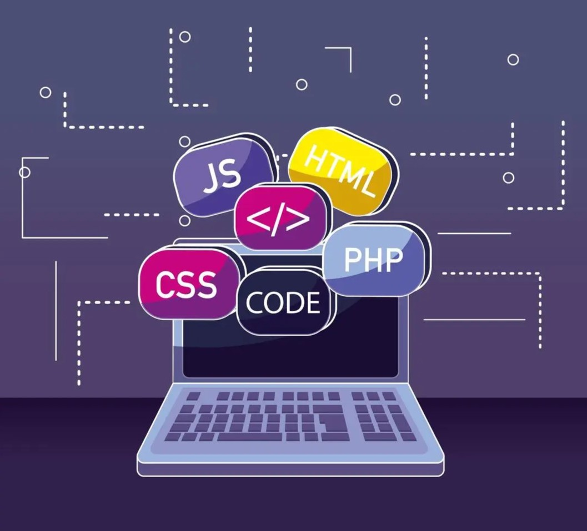

y esta es mi pagina personal
Hola mi nombre es Braulio Osvaldo Pérez Martínez, tengo 21 años y estoy cursando la carrera de Licenciado en tecnologías de información en FACPYA, esta es la segunda carrera que curso después de me saliera de la anterior, Lic. en multimedia y animación digital en FCFM, Esa carrera no fue lo que yo esteraba y como resultado me llevo a que no me fuera tan bien ahí. Después de eso elegí entrar a esta carrera (que por cierto era una de las que contemplaban antes de entrar a la primera) y debo de decir que es un caso totalmente contrario a la anterior, no solo me siento mas “cómodo” con lo que hago, si no que he notado que es algo que yo podría hacer.
Si bien no diría que tengo una historia muy acérrima con las computadoras, mentiría si dijera que no han formado parte de momentos de mi vida, desde pequeño fui el que mas se acercó al mundo tecnológico de mi familia, he llegado a navegar por internet y descargar cosas por los conocidos tutoriales loquendo, si hablamos de programar, también he tenido mi historia, en la preparatoria tome un curso de programación/robótica, debo de decir que fue algo que me gustó mucho cuando lo intente por primera vez, incluso si fuera mover un robotsito con códigos en un programa parecido a scratch, fue mi primer acercamiento a lo que estudio ahora. Y aunque en mi anterior carrera también llevaba programación, no diría que por mi parte le puse un empeño similar al que hago ahora mismo, lo que me ha llevado a saber más del tema.
Podría decir que mis pasatiempos son comunes, por ejemplo ver series, películas o jugar videojuegos, podria mencionar mis franquicias favoritas de este último:
Pero si me centrara en una fijación “poco común” que tengo, seria el doblaje. No diría que es algo a lo que yo realísticamente me dedicara, pero es algo de lo que soy muy fan. Valoro mucho el trabajo de la actuación de voz, tengo conocimiento de varios actores de doblaje y demás.
Y curiosamente, este gusto me ha llevado a aplicar la programación en ello. Soy un editor en la página “Doblaje Wiki”, actualizo la página con información de actores y doblajes, incluso me he contactado con algunos actores de doblaje para ciertos datos. La página utiliza un editor básico, pero también uno a código que es en el que he aprendido a usarlo a base de intuición a lo largo del tiempo, no es algo muy complicado, pero es algo de notar. Esto me lleva al punto de esta asignatura, esto de la edición en una pagina de doblaje es algo que empecé a hacer antes de entrar a la carrera, pero fue justo en esta asignatura donde empecé a ver cosas similares a lo he llevado haciendo como pasatiempo durante un tiempo.